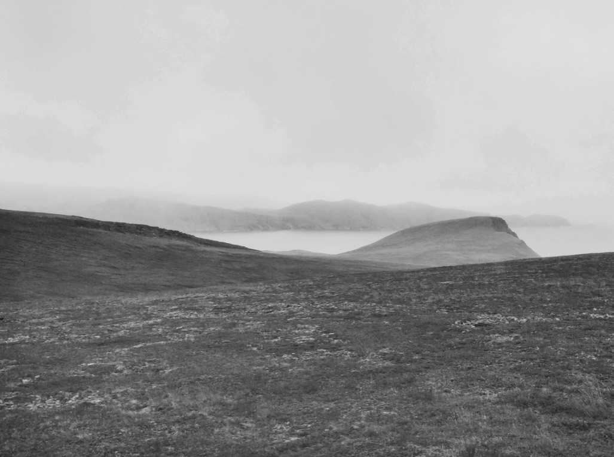

- 
There was no light. There was no night. There was no time, no language, no water. It sounded like this: tundra, tundra, tundra. It looked like this: glowing, blue, unmoving ice. But there were no ears that listened nor eyes that saw. The world was unnamed, and I — was I there?
Something touches me, soft and like the sun. "Best to stay put," a voice says. Its carrier sits on the rock on which I am. And have been.
The last time I was awake...
I know suddenly, I am old.
No longer is the white cold glass, but berry-inked moss, fallen feathers, red leaves I do not recognize.
For a thousand years all was silent and far. But now, a child picks something bright from the bog. She takes a bite.
"Sweet apple clouds," she says.
A hand brushes over her hair. "Yes. They were your father's favorite, too."
For as far as I can remember, no one was around to eat them. Their peachy sheen faded into a dry olive tint. Their seeds returned to the roots. An eventual union with the soil.
Soil. Was I was born with its embrace?
"When does the fog leave, mama?"
"Soon," responds a quiet tear, "when we arrive in the south there will be no fog."
I think of the name cloudberry. It's not a bad name.

"Is papa there?"
"No," a drift from the mountain, "he is gone with the boat."
"And uncle, too?"
"And uncle. All the men from the village. On the same boat."
Something tumbles on me, a bead of rain. I devour it.
"When do they come back? If I can swim, I will swim to them."
"It's better not to swim, or know how."
"Why?"
The wind makes a pale opening in the sky.
"Imagine it is very, very cold. Imagine the ocean. Imagine you are in the middle of it by yourself. No one, no boat. The water is biting your skin. You stop feeling your fingers, your toes, your legs, your belly, your..."
"No no no no no! I am cold, mama."
"That's why fishermen do not learn to swim. Your father didn't. It's better to drown than to freeze. Faster."
They leave without another word. I wonder what their weep tastes of.
The sea, or cloudberries.
Am I alone.
Am I not. First the hooveprints, then a sandy shadow, a thick breath.
Teeth. A sultry darkness surrounds me.
I am breaking.
Thaw in one whisper
things I have never felt
warmth, the sound of waves,
a bird's yearning for life
How much sadness is in a child's fingertip?
I will
tundra
dream
tundra
again
tundra